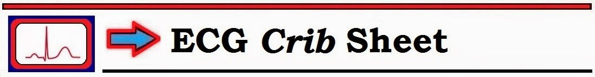
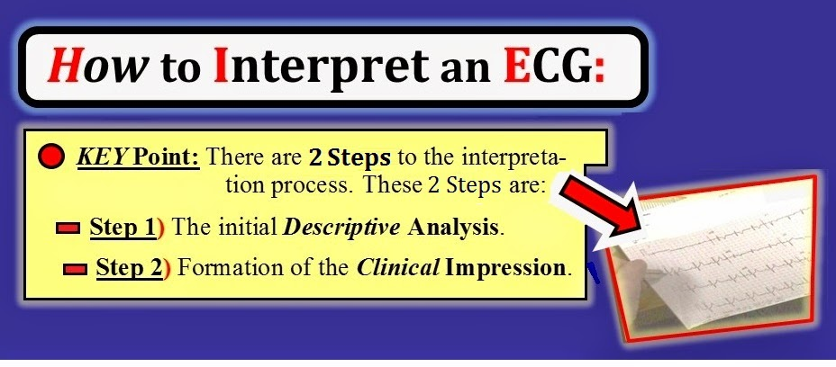
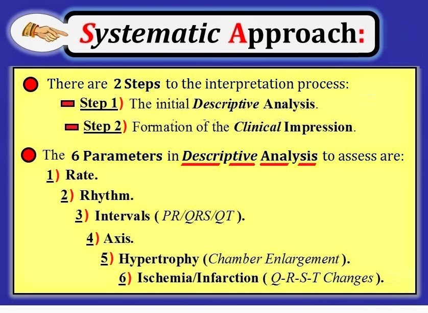
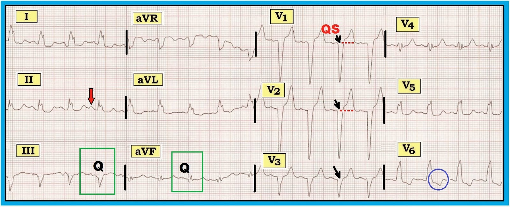
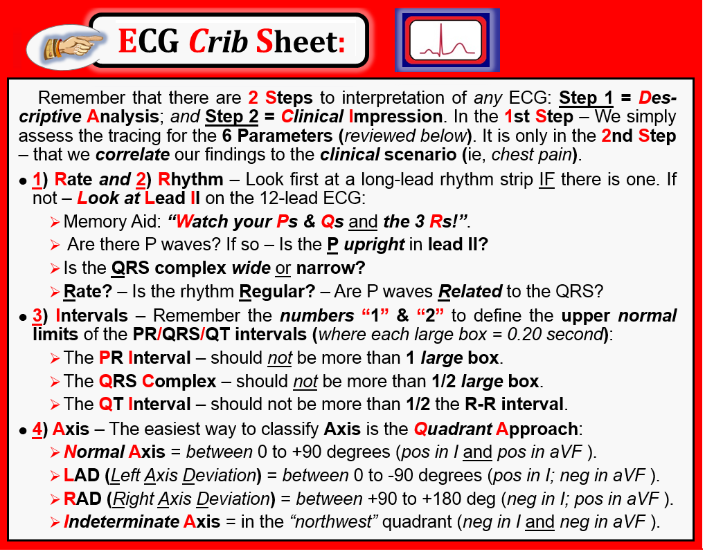
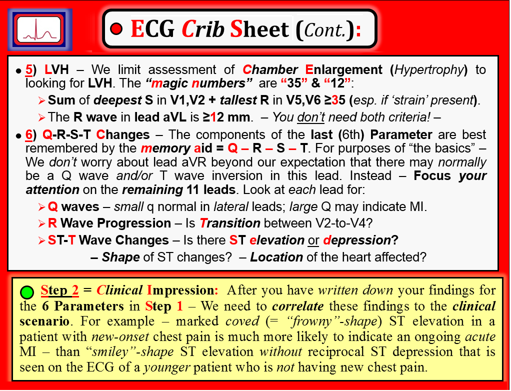
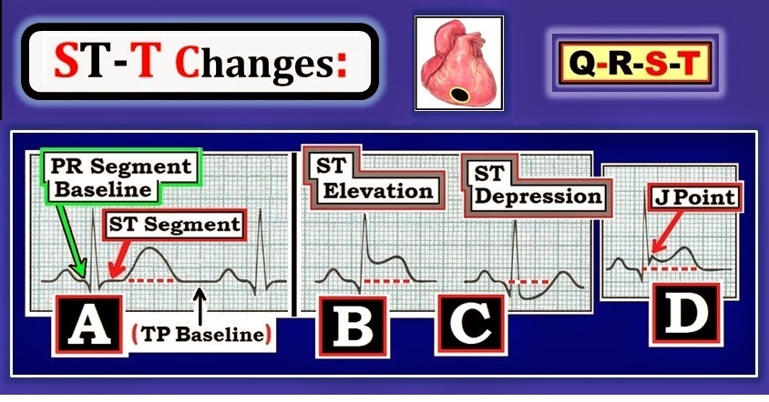
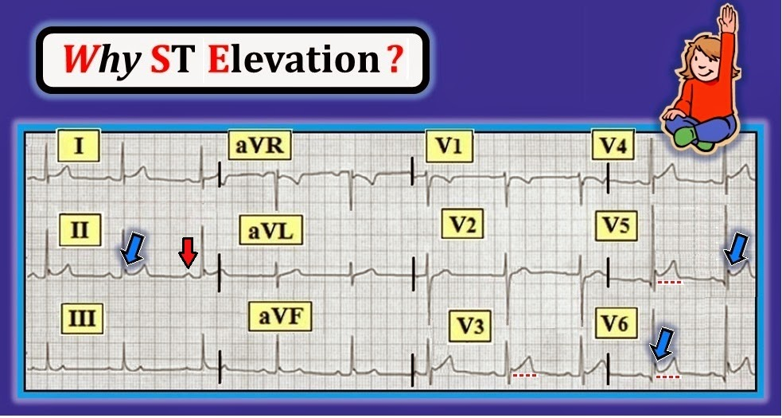

ECG Blog #93 (Khái niệm cơ bản-6) – Cách tiếp cận hệ thống

--------------------------------
Đây là bài thứ 6 trong loạt Khái niệm Cơ bản về Điện tâm đồ. Thay vì các ca cụ thể — mục tiêu của loạt Khái niệm cơ bản về điện tâm đồ này là ôn tập ngắn gọn một số chủ đề ít chuyên sâu hơn, vốn tạo nên nền tảng của việc đọc điện tâm đồ. Nội dung này được trích (có chỉnh sửa) từ cuốn sách nhập môn mới của tôi về đọc điện tâm đồ = “A 1st Book on ECGs-2014” và/hoặc phiên bản mở rộng 1st-ECG-Book-ePub (hiện đã có trên kindle-nook-kobo-ibooks). Rất HOAN NGHÊNH ý kiến phản hồi của bạn về loạt bài này!
--------------------------------
LƯU Ý: Để tăng tính thiết thực — một số điểm nâng cao đã được bổ sung nhằm minh họa ứng dụng lâm sàng (phần nội dung nâng cao hơn này được trích từ cuốn sách của chúng tôi ECG-2014-ePub). Bằng cách này — chúng tôi hy vọng bài viết sẽ đáng quan tâm và hữu ích với người đọc điện tâm đồ ở mọi trình độ.
--------------------------------
LIÊN KẾT tới các bài Khái niệm Cơ bản về Điện tâm đồ Trước đây:
- Basic Concepts #1 — Thuật ngữ QRS
- Basic Concepts #2 — Các khoảng (PR/QRS/QT )
- Basic Concepts #3 — Trục
- Basic Concepts #4 — Phân nhóm chuyển đạo
- Basic Concepts #5 — LVH
- Basic Concepts #6 (chính bài này! ) — Cách tiếp cận hệ thống
- Basic Concepts #7 — Thay đổi Q-R-S-T
-------------------------------


--------------------------------
Bất kể người đọc có kinh nghiệm đến đâu — việc đọc điện tâm đồ cần phải có hệ thống. Lý do rất đơn giản — các dấu hiệu sẽ bị bỏ sót trừ khi người đọc thường quy tuân theo một Cách tiếp cận Hệ thống tuần tự có tổ chức.
- Có nhiều hệ thống hợp lý để đọc điện tâm đồ. Hệ thống bạn theo có phải là hệ thống chúng tôi khuyên dùng hay không cũng không quan trọng. Điều duy nhất quan trọng là hệ thống của bạn bao gồm tất cả các thành phần thiết yếu — và bạn thường xuyên tuân theo nó với từng điện tâm đồ, mọi điện tâm đồ mà bạn đọc. Chỉ bằng cách này bạn mới tránh được việc bỏ sót những dấu hiệu có thể quan trọng.
- Điện tâm đồ không thể được đọc tách rời khỏi bối cảnh. Cần phải biết (ít nhất là): i) Tuổi của bệnh nhân; và ii) Lý do chỉ định điện tâm đồ. Thông tin bệnh sử có thể ngắn gọn. Ví dụ như — “đau ngực mới khởi phát” — “đợt cấp suy tim, nhưng không đau ngực” — “khám sức khỏe trước tuyển dụng, không triệu chứng”. Lý do cần lượng thông tin lâm sàng tối thiểu này — là cùng một hình ảnh điện tâm đồ giống hệt nhau có thể được diễn giải rất khác nhau tùy theo triệu chứng gợi ý một biến cố cấp tính hay một tình huống ít đáng lo ngại hơn.
--------------------------------
Việc đọc bất kỳ điện tâm đồ nào cũng cần có 2 Bước (Hình 1):
- Bước 1 — là bước xem xét tổng quát ban đầu toàn bộ bản ghi, được gọi là Phân tích Mô tả.
- Bước 2 — là hình thành Nhận định Lâm sàng.
BƯỚC 1 trong quá trình đọc (= Phân tích Mô tả) — thật dễ! Việc duy nhất cần làm là mô tả các dấu hiệu nhìn thấy trên bản ghi. Ngay sau đây chúng tôi sẽ trình bày một Bảng kiểm có cấu trúc để hỗ trợ việc này (bên dưới, ở Hình 2).
- BƯỚC 2 là bước thú vị và hữu ích nhất về mặt lâm sàng — trong đó bạn diễn giải các dấu hiệu điện tâm đồ đã ghi nhận ở Bước 1 trong bối cảnh tình huống lâm sàng. Ví dụ — cùng một hình dạng và mức độ ST chênh lên giống hệt nhau có thể được diễn giải là biến thể bình thường lành tính gọi là tái cực sớm NẾU gặp ở một người trẻ tuổi không triệu chứng — nhưng lại có thể là điều đáng lo ngại (và có thể gợi ý nhồi máu cơ tim giai đoạn sớm) nếu gặp ở một người lớn tuổi đến khám vì đau ngực mới khởi phát. Đối chiếu lâm sàng (như diễn ra ở Bước 2) — là một phần thiết yếu của quá trình đọc điện tâm đồ.
- CẢNH BÁO: Một trong những sai lầm thường gặp nhất ở cả người mới đọc lẫn người đã có kinh nghiệm — là không tách riêng trong đầu 2 BƯỚC của quá trình đọc được trình bày ở Hình 1. Nếu không làm vậy — sẽ có quá nhiều cám dỗ vội đi đến kết luận từ những dấu hiệu có vẻ hiển nhiên đập ngay vào mắt trước khi bạn xem xét có hệ thống toàn bộ bản ghi.


--------------------------------
Cách tiếp cận Hệ thống: Một Bảng kiểm cho Phân tích Mô tả
MẤU CHỐT để đọc bất kỳ điện tâm đồ nào là sử dụng một Cách tiếp cận Hệ thống. Cách tiếp cận mà chúng tôi đề xuất để đọc mỗi điện tâm đồ 12 chuyển đạo bạn gặp bao gồm đánh giá có hệ thống tuần tự 6 Thông số được liệt kê dưới đây và tóm tắt trong Hình 2. 6 Thông số cần đánh giá thường quy trong BƯỚC 1 Phân tích Mô tả gồm:
- Tần số.
- Nhịp.
- Các khoảng (khoảng PR/QRS/QT).
- Trục.
- Phì đại (= Lớn các buồng tim).
- Thiếu máu cục bộ/Nhồi máu (Thay đổi Q-R-S-T).
Điểm CHÍNH: Mục đích của việc có (và thường xuyên sử dụng) một cách tiếp cận hệ thống tuần tự làm Bảng kiểm rất đơn giản: Nó giúp bạn tránh bỏ sót những dấu hiệu có thể quan trọng bằng cách nhắc bạn cần tìm những gì.
- “Tin tốt” — là KHÔNG cần học thuộc các chi tiết trong Cách tiếp cận Hệ thống của chúng tôi. Chúng tôi trình bày lại toàn bộ ở phần sau của bài viết này trong Hình 5 và Hình 6 — và chúng tôi liên tục củng cố việc áp dụng lâm sàng hệ thống này trong tất cả các bài viết trên ECG Blog của chúng tôi.
- Sử dụng “hệ thống” không làm bạn chậm lại. Phải thừa nhận — lúc đầu có thể mất nhiều thời gian hơn để đọc bản ghi (khi bạn đang làm quen với hệ thống). Dù vậy, chỉ cần luyện tập một chút — ít đến bất ngờ — bạn sẽ thấy việc sử dụng thường quy một Cách tiếp cận Hệ thống với từng bản ghi — mọi bản ghi bạn đọc — sẽ: i) Đẩy nhanh tốc độ đọc của bạn (vì bạn sẽ làm việc có tổ chức — và do đó có thể đi qua bảng kiểm nhanh hơn nhiều); và ii) Tăng độ chính xác khi đọc (vì ngay lập tức bạn sẽ ít có khả năng bỏ sót các dấu hiệu quan trọng hơn rất nhiều).
- LƯU Ý: Việc bạn quyết định dùng Hệ thống của chúng tôi (trình bày ở Hình 2) — hay một hệ thống khác mà bạn thích — hoặc thậm chí kết hợp nhiều hệ thống đều không quan trọng. Điều quan trọng — là CHÍNH BẠN xây dựng cho mình một hệ thống tuần tự để đọc điện tâm đồ mà CHÍNH BẠN sử dụng thường xuyên khi đọc từng bản ghi mà bạn gặp.


--------------------------------
Điều gì Xảy ra Khi Bạn Không Dùng một Hệ thống?
Hãy xem điện tâm đồ 12 chuyển đạo ở Hình 3. Nhịp là nhịp xoang — thể hiện qua sóng P dương với khoảng PR cố định ở chuyển đạo II (mũi tên đỏ).
- Các phức bộ QS ở chuyển đạo V1,V2,V3 (các mũi tên đen nhỏ) — có chỉ ra nhồi máu trước vách không?
- ST chênh lên ở chính các chuyển đạo thành trước này — có chỉ ra rằng nhồi máu trước vách có thể là cấp tính không?
- Sóng ST-T chênh xuống ở chuyển đạo V6 (trong vòng tròn xanh dương) và ở mức độ ít hơn ở các chuyển đạo I, aVL và V5 — phản ánh thiếu máu cục bộ hay thay đổi soi gương?
- Sóng Q ở chuyển đạo III và aVF (trong các hình chữ nhật xanh lá) — có chỉ ra nhồi máu thành dưới cũ không?


--------------------------------
GỢI Ý: Chúng tôi cố ý chọn điện tâm đồ ở Hình 3 để minh họa tầm quan trọng của việc dùng một cách tiếp cận hệ thống tuần tự. Chúng tôi thừa nhận đã cố tình đánh lừa khi đánh dấu điện tâm đồ này — với nỗ lực hết mức nhằm làm bạn phân tâm để trả lời các câu hỏi đặt ra trước khi thực hiện phân tích có hệ thống.
- Bạn có rơi vào “bẫy” không?
--------------------------------
TRẢ LỜI và Diễn giải cho Hình 3: Như cần làm với mọi điện tâm đồ bạn gặp — bản ghi này cần được đọc có hệ thống theo một cách tiếp cận tuần tự. Chúng tôi theo Bảng kiểm 6 Thông số ở Hình 2.
- Điểm CHÍNH: Điện tâm đồ ở Hình 3 minh họa lý do chúng tôi đặt việc đánh giá Các khoảng ở thời điểm sớm trong cách tiếp cận hệ thống của mình. Các tiêu chuẩn về Trục, Lớn các buồng tim và Thiếu máu cục bộ/Nhồi máu đều thay đổi khi phức bộ QRS bị giãn rộng do blốc nhánh hoặc IVCD (chậm dẫn truyền trong thất – IntraVentricular Conduction Defect). Do đó chúng tôi tiến hành như sau:
- Tần số & Nhịp: Nhịp đều với tần số hơi trên 100 lần/phút (khoảng R-R dài hơi dưới 3 ô lớn). Cơ chế là nhịp xoang — xác định nhờ có sóng P dương ở chuyển đạo II (mũi tên đỏ) với khoảng PR hằng định.
- Các khoảng: Khoảng PR bình thường (không quá 1 ô lớn). Tuy nhiên — phức bộ QRS rộng (rõ ràng dài hơn nửa ô lớn). Hình thái QRS phù hợp với LBBB (blốc nhánh trái – Left Bundle Branch Block) hoàn toàn — vì có sóng R một pha ở chuyển đạo I và V6 và QRS âm ưu thế ở chuyển đạo V1.
BÌNH LUẬN: Điểm cần nhấn mạnh trong cách đọc của chúng tôi là bệnh nhân có LBBB hoàn toàn. Nhận ra rối loạn dẫn truyền này ở thời điểm sớm trong quy trình (ngay sau khi xác định Tần số & Nhịp) — gợi ý cho chúng ta cách đánh giá những dấu hiệu điện tâm đồ nổi bật đã nêu ở trên:
- Phức bộ QS ở các chuyển đạo thành trước — thường gặp và là điều có thể dự kiến với LBBB hoàn toàn.
- Thay đổi sóng ST-T thứ phát với rối loạn dẫn truyền này thường có hướng ngược với hướng chính của QRS (đặc biệt ở 3 chuyển đạo then chốt = I,V1,V6). Vì vậy — ST chênh lên ở thành trước mà ta thấy ở V1,V2 và ST-T chênh xuống ở các chuyển đạo bên đều là những dấu hiệu có thể dự kiến với LBBB.
- LBBB làm thay đổi hướng khử cực vách. Vì vách liên thất là phần đầu tiên của tâm thất khử cực — sự thay đổi hướng hoạt hóa vách này ảnh hưởng đến sự hình thành sóng Q khi có LBBB (vì sóng Q là phần đầu tiên của phức bộ QRS). Do đó — Không thể rút ra kết luận nào về khả năng nhồi máu thành dưới cũ từ các sóng Q mà ta thấy ở chuyển đạo III và aVF của bản ghi này.
- Có những ngoại lệ, khi vẫn chẩn đoán được nhồi máu cũ và/hoặc mới dù có LBBB. Đây là một chủ đề nâng cao hơn. (Xem Mục 05.24 trong tệp pdf 31 trang này, trích từ ECG-2014-ePub của chúng tôi). Dường như không có ngoại lệ nào trong số đó ở ca này. Tất cả những gì có thể nói về bản ghi này là “Nhịp nhanh xoang; LBBB hoàn toàn; nhiều khả năng không có thay đổi cấp — Rất nên đối chiếu lâm sàng”.
- ĐIỀU CỐT LÕI: Với điện tâm đồ ở Hình 3, không sử dụng một Cách tiếp cận Hệ thống Tuần tự có đánh giá Các khoảng ở thời điểm sớm trong quy trình — dễ dẫn đến hiểu sai các dấu hiệu điện tâm đồ và chẩn đoán sai bản ghi này.
--------------------------------
“Bảng Tra Cứu nhanh” (crib sheet) Điện tâm đồ của chúng tôi: Ôn lại Cách tiếp cận hệ thống
Vậy các thành phần cụ thể trong cách tiếp cận hệ thống của chúng tôi là gì? Hình 4 và Hình 5 trình bày lại các thành phần này trong Bảng tra cứu nhanh Điện tâm đồ (ECG Crib Sheet) của chúng tôi (được trích từ — A 1st Book on ECGs-2014).
- Chúng tôi liệt kê các yếu tố then chốt cho từng thông số trong 6 thông số ở 2 hình tiếp theo. Chi tiết hơn đã có (và/hoặc sẽ có) trong các bài Khái niệm điện tâm đồ cơ bản trước đây và sắp tới.
- Dành cho Người đọc trình độ cao hơn: — Chúng tôi sẽ BỔ SUNG vào phần đánh giá ở Hình 5 việc đánh giá bất thường nhĩ trái và nhĩ phải (LAA và RAA) — cũng như RVH (Right Ventricular Hypertrophy – phì đại thất phải) — vào phần nhận xét về LVH/Lớn các buồng tim. Tiêu chuẩn cụ thể cho RAA/LAA được trình bày trong ECG Blog 75 — và cho RVH trong ECG Blog 77.
- ĐIỂM MẤU CHỐT: Ngoại trừ việc mở rộng đánh giá Lớn các buồng tim để bao gồm cả tiêu chuẩn RAA/LAA/RVH — các thành phần trong danh sách kiểm tra của Bảng tóm tắt Điện tâm đồ ở Hình 4 và Hình 5 hầu như GIỐNG NHAU giữa những gì chúng tôi khuyến nghị cho người đọc điện tâm đồ mới bắt đầu — trung cấp — và nâng cao.


--------------------------------
HÌNH 4: 2 thông số đầu tiên: Tần số & Nhịp
2 thông số đầu tiên trong phần Phân tích mô tả của Cách tiếp cận hệ thống là Tần số và Nhịp. Trước hết hãy xem dải nhịp chuyển đạo dài NẾU có. Nếu không — Hãy xem chuyển đạo II:
- Mẹo ghi nhớ: “Watch your Ps & Qs and the 3 Rs!” (Hãy để ý sóng P, phức bộ QRS và 3 chữ R!) Một khi đã xác định bệnh nhân ổn định về huyết động — có thể dễ dàng nhớ lại 5 thông số thiết yếu cần đánh giá khi xem xét bất kỳ rối loạn nhịp tim nào nhờ câu này.
LƯU Ý: Không quan trọng bạn đánh giá Ps, Qs & 3Rs theo thứ tự nào — miễn là bạn luôn đánh giá đủ tất cả. Chúng tôi thường thay đổi thứ tự xem xét 5 thông số này — tùy theo việc hoạt động nhĩ, độ rộng QRS hay tính đều của nhịp là dễ hay khó đánh giá hơn trong nhịp đang xem. ĐIỂM THEN CHỐT (PEARL): Nhờ nhớ câu “Watch Ps, Qs and the 3Rs” — chúng tôi có một cách dễ dàng để bảo đảm không bỏ sót yếu tố nào trong 5 yếu tố thiết yếu này. Chúng tôi tự hỏi mình những câu sau:
- Có sóng P không? Nếu có — Sóng P có dương ở chuyển đạo II không?
- Phức bộ QRS rộng hay hẹp?
- Tần số ( Rate) là bao nhiêu?
- Nhịp có Regular (đều) không?
- Nếu có sóng P — Sóng P có Related (liên quan) với QRS không?
KHÁI NIỆM MẤU CHỐT: Trong “thực tế” — Hãy nhớ đánh giá bệnh nhân trước tiên trước khi bị “lạc” trong các chi tiết của điện tâm đồ. Việc này chỉ mất không quá vài giây — để xác định LIỆU bệnh nhân có “ổn định” về huyết động hay không (tức là tỉnh táo và dung nạp được nhịp hiện tại, dù là nhịp gì, với huyết áp và tưới máu các cơ quan sinh tồn đầy đủ).
- Ví dụ, NẾU bệnh nhân “không ổn định” với một nhịp nhanh — thì có thể cần điều trị ngay lập tức (tức là sốc điện chuyển nhịp) trước khi bạn có thể chắc chắn về chẩn đoán nhịp cụ thể. Trong hồi sức cấp cứu, việc chưa chắc chắn 100% về chẩn đoán nhịp vào thời điểm cần bắt đầu điều trị cho bệnh nhân là điều thường gặp.
- Một khi đã bảo đảm bệnh nhân ổn định — Tiến hành đánh giá Ps, Qs & 3Rs với hy vọng xác định được chẩn đoán nhịp cụ thể.
LƯU Ý: Cho những ai muốn tìm hiểu thêm về quy trình chẩn đoán khi đánh giá nhịp nhanh ở bệnh nhân cấp cứu — Chúng tôi cung cấp các tệp pdf tải về sau đây từ ACLS-2013-ePub: Mục 14.0 cho SVT đều — Mục 08.0,09.0 cho nhịp nhanh QRS rộng (WCT) đều — và ECG Blog #36 cho nhịp WCT không đều.
--------------------------------
HÌNH 4: Thông số #3 = Các khoảng (PR – QRS – QT )
Có 3 khoảng cần đánh giá thường quy (được bàn chi tiết trong Basic ECG Concepts #2). Để dễ nhớ — Hãy nhớ các con số “1” và “2” để nhớ lại giới hạn bình thường trên của các khoảng PR/QRS/QT:
- Khoảng PR — không nên kéo dài quá 1 ô lớn .
- Phức bộ QRS — không nên rộng quá 1/2 ô lớn .
- Khoảng QT — không nên dài quá 1/2 khoảng R-R.
Lưu ý lâm sàng về các khoảng: Hãy nhớ những điều sau:
- NẾU khoảng PR dài (hơn 1 ô lớn) trong nhịp xoang — thì có blốc AV độ 1.
- NẾU QRS rộng — Cần xác định TẠI SAO nó rộng (thường là do BBB/IVCD hoặc một nhịp thất — đôi khi do WPW, tăng kali máu, hoặc rối loạn chuyển hóa khác/quá liều thuốc).
- NẾU QT dài — Hãy nghĩ tới “Thuốc/Điện giải/Thần kinh trung ương” (“Drugs/Lytes/CNS”) là nguyên nhân (Xem Mục 06.0 trong ECG-2014-ePub để có bàn luận chi tiết hơn). Lưu ý rằng việc đánh giá khoảng QT khó hơn nếu tần số nhanh (trên 100/phút) hoặc nếu QRS rộng (vì BBB thường làm kéo dài khoảng QT).
--------------------------------
HÌNH 4: Thông số #4 = Xác định TRỤC
Cách dễ nhất để phân loại trục là phương pháp góc phần tư (được bàn chi tiết trong Basic ECG Concepts #3).
- Trục bình thường = trong khoảng 0 đến +90 độ (dương ở chuyển đạo I và dương ở chuyển đạo aVF).
- LAD (Left Axis Deviation – trục lệch trái) = trong khoảng 0 đến -90 độ (dương ở I; âm ở aVF).
- RAD (Right Axis Deviation – trục lệch phải) = trong khoảng +90 đến +180 độ (âm ở I; dương ở aVF).
- Trục không xác định = nằm trong góc phần tư “tây bắc” (âm ở I và âm ở aVF).
LƯU Ý: Hiếm khi cần tính trục chính xác. Về mặt lâm sàng — thường chỉ cần xác định trục nằm trong góc phần tư nào là đủ.
- NẾU bạn ước lượng sai lệch trong vòng 20-30 độ so với trục thực — thì như vậy đã quá đủ chính xác cho mục đích của chúng ta.
- NẾU phức bộ QRS đẳng điện (phần dương và phần âm bằng nhau) ở bất kỳ chuyển đạo chi nào — thì trục thường sẽ vuông góc với (~lệch 90 độ so với) chuyển đạo này.
Góc nhìn lâm sàng: Thực tế mà nói — lượng thông tin lâm sàng mà việc xác định trục mang lại là hạn chế. Với mục đích “những điều cơ bản” — Hãy nhớ những nguyên tắc chung sau:
- LAD nhẹ không nhất thiết là bất thường. Mặt khác — LAD rõ rệt (gợi ý bởi phức bộ QRS dương ở chuyển đạo I cùng QRS âm rõ rệt ở aVF) — có thể chỉ ra một rối loạn dẫn truyền gọi là LAHB (Left Anterior HemiBlock – blốc phân nhánh trái trước). Để biết thêm về chẩn đoán LAHB trên điện tâm đồ — Xem các Hình 11 đến 15 trong Basic ECG Concepts #3.
- RAD nhẹ không nhất thiết là bất thường. Tuy nhiên — RAD rõ rệt (gợi ý bởi QRS âm rõ rệt ở chuyển đạo I cùng QRS dương ở aVF) — có thể gợi ý bệnh phổi hoặc RVH (Right Ventricular Hypertrophy – phì đại thất phải).
- Bệnh nhân mắc bệnh phổi cũng dễ có trục không xác định.
--------------------------------
Bảng “Tra cứu nhanh Điện tâm đồ” (ECG Crib Sheet): Phần II
Dưới đây, chúng tôi trình bày lại phần thứ 2 của Bảng tóm tắt điện tâm đồ trong Hình 5.


--------------------------------
HÌNH 5: Thông số #5 = Phì đại (Lớn các Buồng tim)
Với “những điều cơ bản” — Chúng tôi giới hạn việc đánh giá Lớn các buồng tim (phì đại) ở việc tìm LVH (được bàn chi tiết trong Basic ECG Concepts #5). Các “con số kỳ diệu” là “35” và “12”.
- Tổng của sóng S sâu nhất ở V1,V2 cộng với sóng R cao nhất ở V5,V6 có ≥35 không? Nếu có — thì đạt tiêu chuẩn điện thế của LVH (đặc biệt nếu có ‘tăng gánh’ (strain)).
- Sóng R ở chuyển đạo aVL có ≥12 mm không?
- LƯU Ý: Bạn không cần có đủ cả hai tiêu chuẩn mới chẩn đoán được LVH. Chỉ cần thỏa một trong hai tiêu chuẩn điện thế 35 mm hoặc 12 mm là đủ.
- ĐIỂM MẤU CHỐT: Độ chính xác của điện tâm đồ trong chẩn đoán LVH kém hơn nhiều — NẾU có điện thế của LVH nhưng không thấy “tăng gánh” ở ít nhất một trong các chuyển đạo bên.
- Dành cho Người đọc trình độ cao hơn: — Chúng tôi trình bày đánh giá LAA/RAA trên điện tâm đồ trong ECG Blog #75 — và đánh giá RVH trong ECG Blog #77.
--------------------------------
HÌNH 5: Thông số #6 = Đánh giá Thay đổi Q-R-S-T
Các thành phần của thông số cuối cùng (=thứ 6) được nhớ dễ nhất nhờ mẹo ghi nhớ = Q-R-S-T (sẽ được bàn chi tiết trong các bài Basic ECG Concepts sắp tới). Với mục đích “những điều cơ bản” — Chúng tôi không bận tâm về chuyển đạo aVR, ngoài việc biết rằng bình thường có thể có sóng Q và/hoặc sóng T đảo ngược ở chuyển đạo này. Thay vào đó — Hãy tập trung sự chú ý vào 11 chuyển đạo còn lại. Hãy xem từng chuyển đạo để tìm:
- Sóng Q — sóng q nhỏ và hẹp có thể thấy bình thường ở một hoặc nhiều chuyển đạo bên (chuyển đạo I, aVL; V4,V5,V6). Ngược lại — sóng Q lớn hơn và rộng hơn nhiều khả năng chỉ điểm nhồi máu hơn. Sóng Q càng lớn và càng rộng — thì càng có nhiều khả năng đã từng xảy ra nhồi máu vào một thời điểm nào đó.
- Tăng tiến sóng R — Vùng chuyển tiếp (nơi sóng R trở nên cao hơn độ sâu của sóng S) có xảy ra bình thường không (tức là giữa chuyển đạo V2 đến V4?).
- Thay đổi sóng ST-T — Xem bên dưới.
ĐỊNH NGHĨA Đoạn ST: Hơn bất kỳ thông số nào khác — các thay đổi sóng ST-T xác định liệu đã có MI (Myocardial Infarction – nhồi máu cơ tim) hay chưa — và, nếu có — liệu MI có nhiều khả năng là cấp tính hay không.
- Đoạn ST bình thường thì đẳng điện. Nó nằm trên đường nền — và không “chênh lên” cũng không “chênh xuống” (Hình 6).


--------------------------------
Đánh giá thay đổi sóng ST-T: Chú ý những điều sau:
- Có ST chênh lên hay chênh xuống?
- Các thay đổi ST-T (nếu có) có hình dạng thế nào? (tức là lõm lên, dạng “mặt cười” — hay dạng vòm (coved) đáng lo ngại hơn = dạng “mặt mếu” — Xem Mục 09.0 trong ECG-2014-ePub để biết thêm chi tiết về đánh giá thay đổi sóng ST-T — với phần về tái cực sớm bắt đầu từ Mục 09.14).
- Phần nào (vị trí) của tim bị ảnh hưởng? (được bàn chi tiết trong Basic ECG Concepts #4).
--------------------------------
HÌNH 7: Áp dụng Cách tiếp cận Hệ thống
Hãy đọc điện tâm đồ 12 chuyển đạo trong Hình 7. Bạn có thể tham khảo lại Hình 4 và Hình 5 để xem chi tiết các nội dung trong phần Phân tích Mô tả (= là Bước 1 trong việc diễn giải của bạn).
- CÂU HỎI-1: Bước 2 trong việc diễn giải của bạn (= Nhận định Lâm sàng của bạn) sẽ thay đổi như thế nào — tùy theo bệnh nhân là: i) một người trẻ tuổi không triệu chứng đến khám sức khỏe trước khi tuyển dụng? — ii) một người lớn tuổi đến ED (khoa cấp cứu — Emergency Department) vì đau ngực mới khởi phát đáng lo ngại? — hay iii) một người trẻ tuổi mới bị nhiễm trùng hô hấp trên và đau ngực mới xuất hiện, kiểu màng phổi và thay đổi theo tư thế?
- CÂU HỎI-2: Ngay cả khi bệnh nhân này lớn tuổi và đang đau ngực mới xuất hiện — Những đặc điểm điện tâm đồ nào làm cho ST chênh lên thấy trong Hình 7 ít có khả năng là MI cấp (nhồi máu cơ tim — Myocardial Infarction)?


--------------------------------
TRẢ LỜI cho Hình 7: Chúng tôi bắt đầu Cách tiếp cận Hệ thống bằng việc đánh giá 6 Thông số tạo nên Bước 1 của việc diễn giải = Phân tích Mô tả. Sau đó chúng tôi đưa ra Nhận định Lâm sàng — dựa trên bệnh sử (xem bên dưới).
- Tần số & Nhịp: Nhịp khá đều — và phức bộ QRS hẹp (thời gian không quá nửa ô lớn). Sóng P dương với khoảng PR cố định ở chuyển đạo II (mũi tên đỏ) xác định đây là Nhịp Xoang. Khoảng R-R khoảng 5 ô lớn. Do đó tần số = 300/5 ~60 lần/phút.
- Các khoảng: Cả 3 khoảng đều bình thường. Nghĩa là — khoảng PR không quá 1 ô lớn — QRS không quá nửa ô lớn — và QT không quá một nửa khoảng R-R.
- Trục: Trục bình thường (tức là trong khoảng 0 đến +90 độ) — vì hướng chung của QRS ở cả chuyển đạo I và chuyển đạo aVF đều dương. Vì hướng QRS chung dương gần như bằng nhau ở chuyển đạo I và aVF (có lẽ dương hơn một chút ở aVF) — nên Trục nằm trong khoảng +40-60 độ. Để “tinh chỉnh” — Chúng tôi nhận thấy phức bộ QRS ở chuyển đạo aVL đẳng điện (phần dương và phần âm bằng nhau). Điều này gợi ý Trục vuông góc với (tức là lệch 90 độ so với) chuyển đạo aVL vốn nằm ở -30 độ, tức là Trục nằm ở +60 độ. ĐIỀU CỐT LÕI: Những phép tính chi tiết này (nhằm cố gắng tinh chỉnh việc ước lượng Trục) đã vượt ra ngoài phần cốt lõi của những gì cần thiết. “Câu trả lời nhanh” (và là câu trả lời chúng tôi sẵn lòng chấp nhận) — là Trục trong Hình 7 “bình thường” và nằm đâu đó gần giữa khoảng từ 0 đến +90 độ.
- Phì đại: Có đủ tiêu chuẩn điện thế cho LVH nếu bệnh nhân này trên 35 tuổi. Không có ‘tăng gánh’.
- Thay đổi Q-R-S-T: Có sóng q nhỏ và hẹp ở chuyển đạo V5,V6. Vùng chuyển tiếp bình thường (sóng R trở nên cao hơn độ sâu của sóng S ở giữa chuyển đạo V2 đến V3). Dấu hiệu nổi bật nhất trên bản ghi này là ST chênh lên tại điểm J, lõm lên trên (tức là dạng “mặt cười”), xuất hiện ở nhiều chuyển đạo — gồm chuyển đạo I, II và V3 đến V6. Mức độ ST chênh lên ở các chuyển đạo này là đáng kể — đạt ít nhất 3mm ở chuyển đạo V5. Không có ST chênh xuống soi gương.
Điểm lâm sàng MẤU CHỐT: Phần Phân tích Mô tả ở trên vẫn giữ nguyên bất kể bệnh sử lâm sàng là gì. Tuy nhiên, Nhận định Lâm sàng của chúng ta sẽ thay đổi — tùy theo tình huống nào trong 3 tình huống nêu ở Câu hỏi 1 là tình huống thực tế:
- Tình huống-1: NẾU bệnh nhân này là một người trẻ tuổi không triệu chứng đến khám sức khỏe trước khi tuyển dụng — thì các dấu hiệu sóng ST-T trong Hình 7 nhiều khả năng là lành tính vì: i) Bệnh nhân là người trẻ tuổi và không có triệu chứng; ii) Các sóng q thấy ở chuyển đạo V5,V6 nhỏ và hẹp (tức là nhiều khả năng đó là sóng q vách bình thường thường gặp ở một hoặc nhiều chuyển đạo bên); iii) ST chênh lên có dạng “mặt cười” (đây là dấu hiệu thường gặp và thường lành tính khi xuất hiện ở người trẻ tuổi khỏe mạnh); và iv) Không có ST chênh xuống soi gương. Hình ảnh điện tâm đồ tổng thể điển hình cho dạng biến thể bình thường được gọi là Tái cực Sớm (early repolarization). Không cần theo dõi thêm.
- Tình huống-2: NẾU thay vào đó, bệnh nhân này là một người lớn tuổi đến ED vì đau ngực mới khởi phát đáng lo ngại — thì cần đi đến một kết luận khác. Điện tâm đồ trong Hình 7 vẫn ít có khả năng là STEMI cấp (ST Elevation Myocardial Infarction — nhồi máu cơ tim có ST chênh lên) vì: i) Các sóng q ở V5,V6 nhỏ; ii) ST chênh lên lan tỏa hơn so với thường gặp trong MI cấp — và hình dạng ST chênh lên trông lành tính (lõm lên trên dạng “mặt cười”); iii) Không có ST chênh xuống soi gương; và iv) đây là một Điểm nâng cao — Khoảng QT trông ngắn và biên độ sóng R được bảo tồn ở các chuyển đạo trước tim đầu tiên. Dù vậy — có ST chênh lên trong Hình 7 — và khi không có bản ghi trước đó để so sánh, không thể loại trừ khả năng có ST chênh lên cấp mới chồng lên hình ảnh Tái cực sớm có sẵn. Cần Đối chiếu lâm sàng để biết phải làm gì!
- Tình huống-3: Nếu bệnh nhân này là một người trẻ tuổi mới bị nhiễm trùng hô hấp trên và đau ngực mới xuất hiện, kiểu màng phổi và thay đổi theo tư thế — thì ST chênh lên lan tỏa ở nhiều chuyển đạo mà không có ST chênh xuống soi gương có thể là Viêm màng ngoài tim cấp. Là một Điểm nâng cao — có đoạn PR chênh xuống (ở aVF và V3 đến V6) cũng như đoạn PR chênh lên ở chuyển đạo aVR. Dù vậy — đoạn PR chênh xuống là một thay đổi không đặc hiệu, có thể hỗ trợ chẩn đoán Viêm màng ngoài tim cấp, nhưng cũng có thể gặp trong MI cấp và như một biến thể bình thường. ĐIỀU CỐT LÕI: Tùy theo bệnh sử lâm sàng và kết quả khám thực thể (tức là có tiếng cọ màng ngoài tim không?) — điện tâm đồ trong Hình 7 có thể phù hợp với chẩn đoán Viêm màng ngoài tim cấp (mặc dù không có nhịp nhanh). Cần Đối chiếu lâm sàng.
--------------------------------
TÓM TẮT: Chúng tôi hy vọng rằng bài Khái niệm điện tâm đồ Cơ bản #6 này đã
đạt được những điều sau:
- i) Nhấn mạnh sự cần thiết phải áp dụng thường quy một Cách tiếp cận Hệ thống tuần tự để diễn giải từng và mọi điện tâm đồ bạn gặp.
- ii) Cung cấp cho bạn những điểm thiết yếu của Cách tiếp cận mà chúng tôi ưa dùng (có trong Hình 4 và Hình 5).
- và iii) Minh họa cách sử dụng Cách tiếp cận Hệ thống của chúng tôi — vừa để đánh giá 6 Thông số (= Bước 1) — vừa để diễn giải ý nghĩa lâm sàng có thể có của các dấu hiệu điện tâm đồ mà bạn nhận ra ở Bước 1 tùy theo bối cảnh lâm sàng (= Bước 2, tức là việc đưa ra Nhận định Lâm sàng).
--------------------------------
— Để biết thêm thông tin — XEM TẠI —
- Nội dung và các Hình #1, 2 và 4 đến 7 được trích từ ấn phẩm mới nhất của chúng tôi = “A 1st Book on ECGs-2014” và/hoặc từ phiên bản ePub mở rộng của 1st Book (có trên kindle-kobo-nook-ibooks).

- -
- Nội dung nâng cao hơn và Hình #3 được trích từ ECG-2014-Pocket Brain và/hoặc từ phiên bản ePub mở rộng của ECG-2014 (có trên kindle-kobo-nook-ibooks).

- -
- Mời bạn tải miễn phí bản mở rộng của GLOSSARY (bảng chú giải) các thuật ngữ liên quan đến điện tâm đồ.

- -
--------------------------------------------------------------